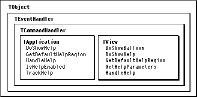

Legacy Document
Important: The information in this document is obsolete and should not be used for new development.
Important: The information in this document is obsolete and should not be used for new development.


Overview
Balloon Help assistance first became available with Macintosh System 7. When Balloon Help is on, the Help Manager displays help balloons as the user moves the cursor over icons, windows, menus, or other areas of an application or the Macintosh desktop. The balloons are rounded-rectangle windows that contain information about the item under the cursor. A user turns on Balloon Help by choosing the Show Balloons command from the Help menu.Your application can use Balloon Help to provide information when a user moves the cursor over a specific area of the application, such as a menu or view. Since control items in MacApp are also views, you can easily add Balloon Help to a button, a checkbox, or your own custom controls. You define help resources, and MacApp makes calls to the Help Manager to display or remove help balloons as the user moves the cursor.
MacApp's Help Balloon Support
Figure 30-1 shows the classes and methods MacApp uses to support Balloon Help. You don't usually need to override any of the methods shown--MacApp handles Balloon Help processing automatically.MacApp provides Balloon Help support in the application, window, and view classes. The application object maintains a current help region, set to the visible region of the current view. The help region is invalidated whenever the user moves the cursor outside of the region. When the application object determines that the help region is invalid, it notifies the window containing the cursor. This window then gives each of its views a chance to show a help balloon. A view shows a help balloon by calling the
DoShowHelpmethod. When a view shows a help balloon, it also resets the help region.Supplying Balloon Help for a View
To supply Balloon Help for a view, you define an'hdlg'(help dialog) help resource in your resource definition file and assign its resource ID to thefHelpIDfield of the view. You also set thefHelpIndexfield to specify a particular help item within the help resource. You can set initial values for these fields when you create or modify a'View'resource with a view-editing program. You can also change the help-field values while the application is running.Figure 30-1 Balloon Help classes and methods

The
TViewfieldfHandlesHelpspecifies whether a view should track the mouse to show help balloons. The default value isTRUE. Once you have set a view'sfHelpIDandfHelpIndexfields, MacApp takes care of calling the Help Manager to display or hide the balloon at the correct time.Supplying Balloon Help for a Menu
To supply Balloon Help for a menu, you add a help resource of type'hmnu'to your resource definition file. You also define a'STR#'resource with help strings that describe the items in the menu. This requires no support from MacApp.More Information
Balloon Help is described in detail in the "Help Manager" chapter of Inside Macintosh: More Macintosh Toolbox. You can find information there on such Balloon Help topics as
- the eight standard balloon positions and their variation codes
- the types of resources used for defining balloons
- the default help balloons (you don't need to do anything to display these balloons in your application), which include help for
- standard file dialog boxes
- window title bar, window close box, and window zoom box
- hints on constructing useful help messages for your balloons